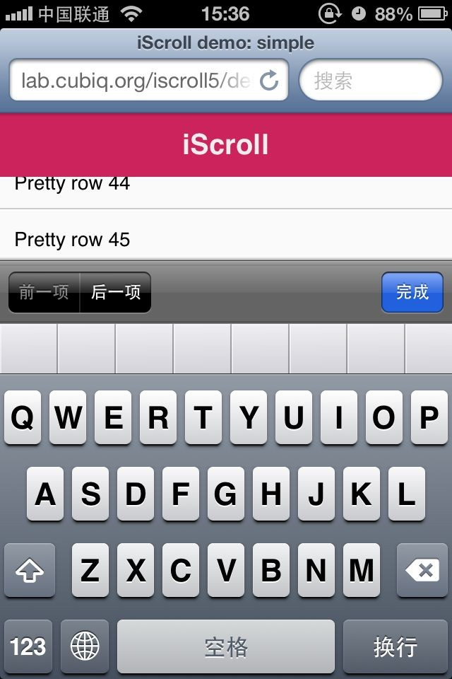
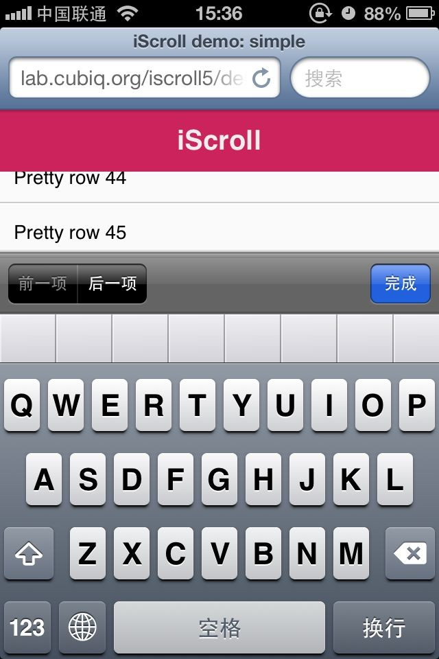
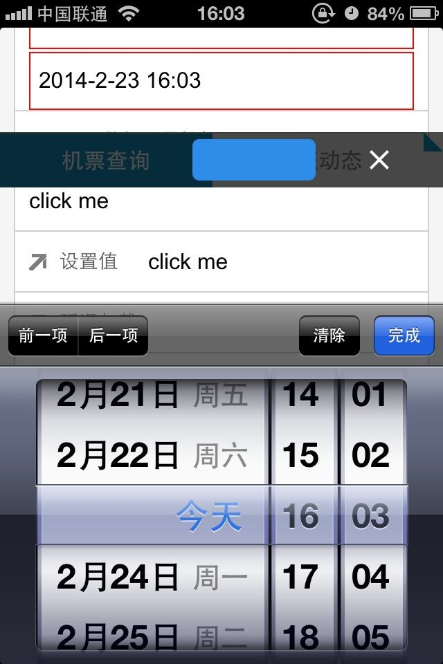

前言
今天来公司的主要目的就是研究虚拟键盘与fixed的问题，期间因为同事问起闭包与事件委托（阻止冒泡）相关问题，便穿插了一篇别的：
【小贴士】工作中的”闭包“与事件委托的”阻止冒泡“，有兴趣的朋友可以去看看，因为首页只能放一篇，这个就略去了
现在回到主要研究点，首先在移动端我们点击文本框后会出现一个虚拟键盘， 虚拟键盘让页面可视区域得到了充分利用，但是也带来了一些问题
问题源头
移动端虚拟键盘出现的条件是：文本框（文本类）获得焦点
但是文本框获得焦点未必会弹出键盘！！！
收起虚拟键盘的条件是：文本框失焦
PS：总而言之，我们认为会出现或者消失虚拟键盘的时候都可能不工作
在移动设备上，如果文本框在上方，点击不会有什么问题：
在设备的最下面的话，就有所不同了，整个块会上移，以将input区域显示出来
这个时候几个棘手的问题就出现了：
① 虚拟键盘的出现对页面来说是不可知的，这句话的理解是：没有键盘出现事件，没有办法获取键盘高度
② 键盘是“贴”在了viewport上，表面上不会对dom产生“任何”影响，但是这个时候一些定位元素的表现却变得“怪异”
比如：
可以看到，无论淘宝或者新浪，这个问题都存在，现在比较普遍的解决方案都是：移动端不采用fixed属性
于是我们来看看是否有其它方案
iscroll是否能解决
其实这个方案在周四的时候我便测试过了，但是结果让人很遗憾
 

作为官方给出的例子，在虚拟键盘弹出来后，光标会乱跑，这个还可以接受，但是：
① 头部不见了
② 偶尔不能显示获得焦点的input
这两个问题就让人难以接受了，于是，我们需要找到其他方案
解决方案
其实这个问题如果真要较真的话，我觉得需要深入研究两个知识点：
① viewport的原理
② 虚拟键盘的原理
就我手里现有资源来说，两个知识点一个都不深入，所以只能先从应用层面解决问题
应用层面解决方案
我们想到这么一个场景，如果我们能监控到键盘的行为，如果能的话，我们便可以
① 键盘弹出时候将fixed元素设置为static
② 键盘消失时候将fixed元素设置为fixed
那么我们能吗？？？
虽然这个方案比较恶心，我们还真能......答案是监控dom变化！
监控键盘
监控的方式其实筛选下来也不过两种：
① 时钟setInterval不停监控
② 系统级别的监控，比如键盘出现时候通知window一个事件，但是很遗憾现在还没有这个事件，但是这个事件等于
input类元素获取焦点 == 弹出虚拟键盘
input类元素失去焦点 == 收起虚拟键盘
但是我们前面已经说过，上面的原则不一定可靠，所以该种方案也未必可靠了
基于系统监控这点，我们还可以监控resize事件或者scroll事件，但是经过我的测试，setInterval表现比较好
于是，我们简单写一段代码，可靠是否满足需求：
window.alert = function (msg) { $('body').append('<div>' + msg + '</div>') }; function fixedWatch(el) { if(document.activeElement.nodeName == 'INPUT'){ el.css('position', 'static'); } else { el.css('position', 'fixed'); } } setInterval(function () { fixedWatch($('#headerview header')); }, 500);
根据测试结果来说，是满足我们的需求的，这里的header不会出问题，但是footer由于没有处理仍然会错位

于是这个问题似乎被我们修复了，但是你可以接受吗？？？这个方案有一个致命的恶心点！
不停的监控dom变化，浪费资源
那么这个问题可优化么？
似乎是可优化的，但是依旧会带来很多问题，优化的入口与出口便是input标签的focus事件
至于其失焦相关的事件便不予关注了，因为可能由一个input跳到另一个input
setTimeout(function () { $('#dl_app img').hide(); }, 100); window.alert = function (msg) { $('body').append('<div>' + msg + '</div>') }; window.res = null; var i = 0; function fixedWatch(el) { alert(i++); if(document.activeElement.nodeName == 'INPUT'){ el.css('position', 'static'); } else { el.css('position', 'fixed'); if(window.res ) { clearInterval(window.res ); window.res = null; } } } $('input').focus(function () { if(!window.res) { fixedWatch($('#headerview header')); window.res = setInterval(function () { fixedWatch($('#headerview header')); }, 500); } });
这样的话，貌似能让代码看上去舒服一点，但是其代价却是所有input类标签都会多一个获得焦点事件，依旧令人痛惜
结语
今天的学习暂时到此，对于虚拟键盘的出现其实可能还有其他的问题，举一个例子来说：
如果我们点击按钮时候会出一个toast在中间，但是虚拟键盘刚好遮住了toast提示信息怎么办呢？这个问题与上述问题其实是一致的
然后这个解决方案的可接受程度，以及其实际是否解决了问题又或者引起了其它问题就需要实际证明了
至于各位有什么好的解决方案，或者想法，可以讨论讨论哦！！！
好了，今天暂时到这里，我们下次继续，如果有可能我们会详细学习下viewport以及虚拟键盘相关